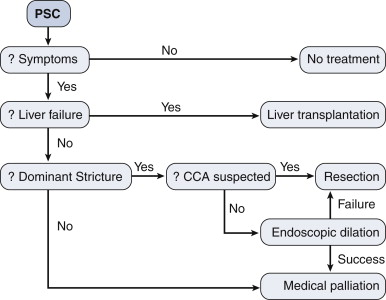

SCLEROSING CHOLANGITIS
DEFINITION
A progressive or intermittent inflammatory disease of the bile
tracts,
leading to stones, pancreatitis or simply jaundice, and often
associated
with inflammatory bowel disease.
top D I A B M
I M home
INCIDENCE
Risk
Factors
Comorbidities: Assoc with IBD.
80% of primary sclerosing cholangitis have ulcerative
colitis, 7% have crohns.
5% of ulcerative colitis have primary sclerosing colangitis, 1% of
crohns.
top D I A B M
I M home
AETIOLOGY
Non-infectious inflammation.
?cause.
Primary has an association with IBD.
Secondary:
- biliary stricturing due to choledocholithiasis, iatrogenic injury,
bile duct neoplasia, Caroli disease.
top D I A B M
I M home
BIOLOGICAL BEHAVIOUR
Pathophysiology
Inflammation ongoing or intermittent.
May lead to stone formation or stricture of the bile duct.
May produce pancreatitis if outflow duct affected.
Most have diffuse stricturing
- 20-50% have a dominant stricture
- propensity for the hepatic duct bifurcation; can occur anywhere.
- may be asymptomatic or cause mechanical biliary obstruction.
Natural History
Progressive, ultimately leads to liver failure
Overall survival is mean 14y
- without liver transplant is less; <10y
Prognostic model proposed based on serum albiumin, age, bilirubin,
LFTs, variceal bleeding.
Complications
Cholangiocarcinoma in 10-15%.
- may appear as a dominant stricture.
top D I A B M
I M home
MANIFESTATIONS
Symptoms
Local
Intermittent or progressive jaundice.
May predate intestinal disease.
Acute cholangitis - pain, fever, jaundice.
Systemic
Lethargy.
Complications
Features of stone formation,
stricture or
pancreatitis possible.
Or cholangiocarcinoma.
- weight loss, worsening pain, progressive dilatation proximal to a
dominant stricture should prompt concern.
top D I A B M
I M home
INVESTIGATIONS
Usual obstructive jaundice work-up.
Bloods
Cholestasis.
- initially only ALP, later bilirubin.
Serological abnormalities
- antinuclear, antismooth muscle, anticardiolipin
- antimitochrondrial us. absent (though characteristic of primary
biliary cirrhosis)
Low albumin and raised INR if cirrhosis.
Tumour Markers
In those with a dominant stricture
Serum CA 19-9.
Imaging
Choalngiograpy
- ERCP usual; MRCP may be enough
- If MRCP equivocal, will need ERCP
Biopsy -> concentric fibrosis of bile ducts (onion skin)
- patients with variant small duct disease require a liver biopsy
for diagnosis.
- in dominant stricture, brushings for cytology to detect cancer
EUS
Most accurate for CCA in dominant biliary strictures
Staging
I = Portal oedema, inflammation, ductal proliferation
II = Peri-portal disease
III = Septal fibrosis, bridging necrosis or both
IV = Biliary cirrhosis
top D I A B M
I M home
MANAGEMENT

Medical
Many agents trialled, none successfully.
- including immunosuppressives, steroids.
So observational alone in asymptomatic patients.
- no RCT evidence to guide use of interventions in asymptomatic
stricturing disease
Symptomatic:
Once symptoms develop, control / palliation initiated.
Cholestyramine, antihistamines for pruritus.
Antibiotics for cholangitis.
Interventions
ERCP and PTC for strictures
- dilation and stenting.
- technical success in up to 80%, but recurrence high; worse if
proximal (especially intrahepatic).
Surgical resection?
- of extrahepatic tree with reconstruction using Roux-en-Y
hepaticojejunostomy with or without stenting.
--> durable relief of jaundice and recurrent cholangitis.
--> may have higher survival compared with those managed with
ERCP alone
- but no RCTs yet to guide decision making, and most centers reserve
surgery for those with dominant strictures failing ERCP management.
Liver transplant.
- 5% of liver transplants in US for this.
- indications similar to other pts with end-stage liver disease
- good outcomes, overall survival 85%; though 15%-20% get recurrent
disease; 30% of these needing retransplantation.
- 10% of transplanted pts found to have an unsuspected CCA in their
explanted liver; does not affect outcome much
Implications for IBD?
Not really. Surveillance as normal.
top D I A B M
I M home